Titanium Cage
The first cage, which gave King Cage its name. The lightest and longest-lasting cage. At home on any bike, from road and touring to custom builds.
- Weight
- About 31g
- Material
- Titanium Tube
- Mount
- 2-Bolt
- Bottle
- Standard Cycling Bottle

Durango, Colorado · Since 1991
King Cage
A cage that won't let you lose your bottle. Bent by hand, one at a time, in a Colorado basement shop.

The Original · 1991
Titanium cage
The first titanium bottle cage, the same shape for over 30 years

For Metal Bottles
Iris · Flat Top
Cycling bottles and metal bottles, in one cage

Bikepacking
Manything cage
From big bottles to tents and sleeping bags, a titanium cage for your fork
01
Brand
King CageDurango, Colorado · Since 1991
King Cage is a water bottle cage workshop founded by Ron Andrews in 1991. He was making tools and machines in a frame shop when a customer asked for a bottle cage made from titanium, and the first titanium cage that came out of it was named the King Cage. He expected dealers to laugh at it. Instead, orders started coming in, and in 1996 a stainless steel cage joined the line.
Every cage is still made in the basement shop at Ron's home in Durango, Colorado. All materials are sourced in the USA, and cutting, bending, welding and finishing are shared between family and a few crew members. These are not stamped out by a factory; each one is bent on jigs and machines that people built by hand.

Built to Last
The King Cage shape has barely changed since the beginning. The top presses down on the groove below the bottle's neck, so the bottle stays put even on rough roads. The stainless steel cage won't leave black marks on your bottle, and its joints are now laser welded for smaller, more even welds.
These are not cages that chase grams alone. They don't lose your bottle, they don't break after years of riding, and they look right on any bike. That is why you see King Cages both on custom frame builders' show bikes and on everyday commuters.
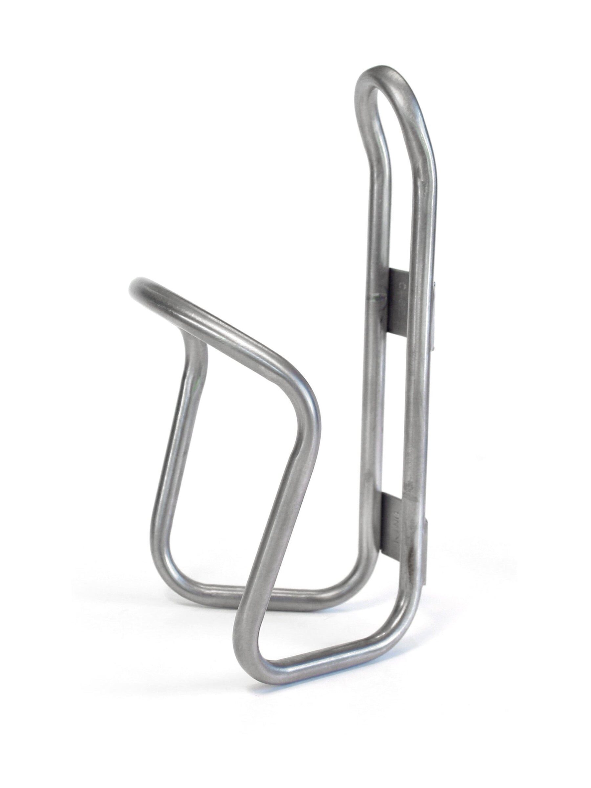
The first titanium bottle cage, made in 1991 at a customer's request. Still made in the same shape today.

The same shape in stainless steel. It won't mark your bottle, and the joints are laser welded.

Ron built the machines and jigs that cut and bend the tubing himself. The shop makes hundreds of cages a week this way.

A family workshop where Ron's wife Shari handles packing and shipping and his daughter Taiya looks after customers. The crew are Durango riders too.


Founder · Ron Andrews
“We thought dealers would laugh or hang up on us. Instead, some of them placed orders.”
Ron Andrews raced mountain bikes on the East Coast with Team Fat Chance. Off the bike, he used his engineering degree at Fat City Cycles and Ibis to streamline production for small frame makers, and went on to work at Merlin, Joe Breeze and Yeti, right at the heart of American handmade bicycles.
In 1990 he was sharing a shop in Somerville, Massachusetts with Mike Augspurger of One-Off Titanium, making tools and machines, when a customer asked for a titanium bottle cage. Using titanium for a bottle cage was an unconventional and tricky idea at the time, but Ron pulled it off.
After moving to Durango in 1992 to work for Yeti, he built frames by day and cages in his garage by night. That garage is today's King Cage shop. At the North American Handmade Bicycle Show (NAHBS), his booth always drew a crowd watching him bend tubes on the spot.
Ron Andrews, founder of King CageKing Cage
The Range
One cage to start with, then small changes for every bike and every bottle.
The first cage from 1991. The basic form, hand-bent from light, strong titanium tubing.
The same shape in stainless steel. Laser-welded joints.
An elegant curve with a slightly tighter grip. Great for metal bottles and down tube mounting.
A flat top so it takes bottles beyond cycling bottles.
A side-entry cage. The answer for full-suspension bikes and small frames.
The same cage with the bottle height changed. For frame bags and small frames.
A titanium cargo cage that carries big bottles, tents and sleeping bags on your fork.
Mounts that make room for a cage, and small things made from titanium.
02
Standard Cage
Titanium · Stainless SteelTitanium · stainless steel cage
The standard cage is the King Cage benchmark. Since its introduction in 1991, the titanium cage has set the standard for durability and design, and the stainless steel cage has been made in virtually the same shape since 1996. Both are hand-bent and welded, holding the bottle firmly on any road and any ride.
Titanium is light and won't rust. Stainless steel offers the same shape at a friendlier price, now with laser-welded joints that are smaller and more even. Both fit standard cycling bottles best.
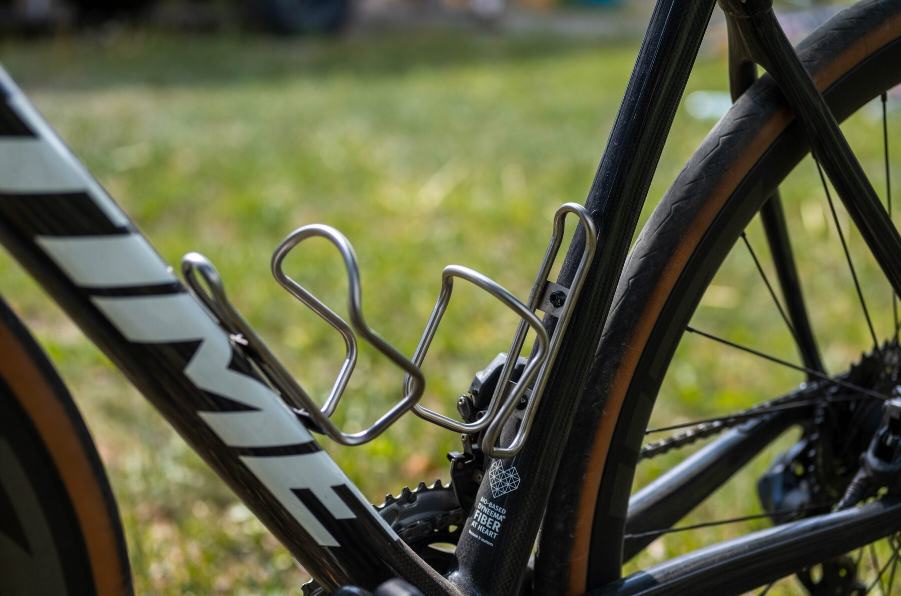

The top of the cage presses on the groove below the bottle's neck. Even on gravel and MTB trails, the bottle doesn't jump out.
The tubing is bent step by step on jigs and machines Ron built himself. Not stamped out by a factory, but touched by human hands.
Both titanium and stainless steel are sourced only in the USA. Titanium cages are stamped King Cage Titanium.
Neither stainless steel nor titanium leaves black marks on your bottle. Bottle and cage both stay clean for years.
The first cage, which gave King Cage its name. The lightest and longest-lasting cage. At home on any bike, from road and touring to custom builds.
The titanium shape made in stainless steel, with neatly laser-welded joints. The easiest choice for your first King Cage.
Titanium Cage · On the benchTitanium


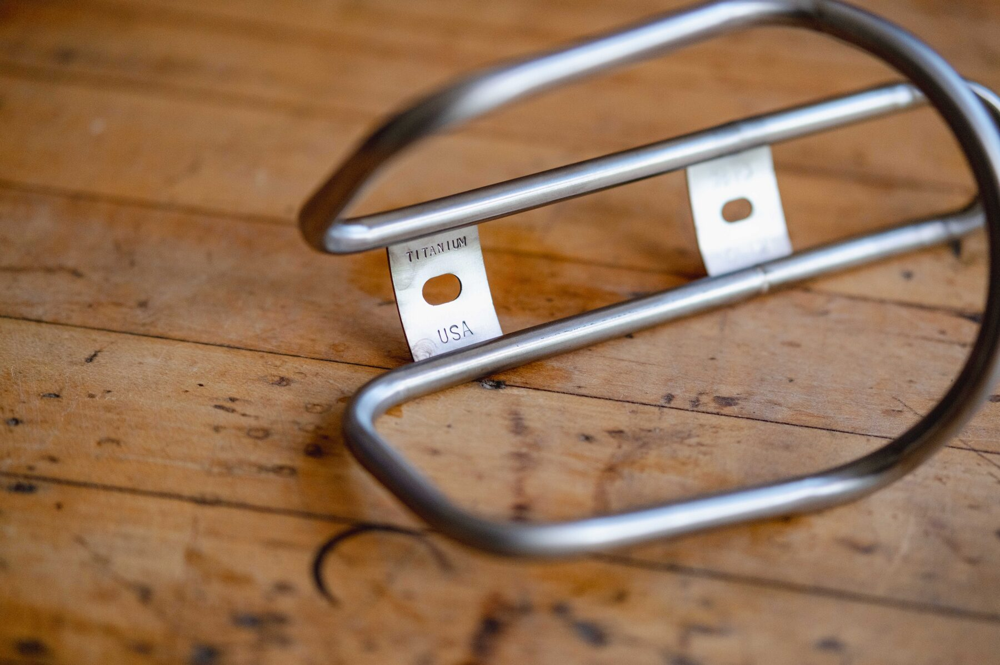
Stainless Steel Cage · Unchanged since 1996Stainless


Lightweight yet Secure
The titanium cage is light but never holds the bottle loosely. The cage's spring wraps the bottle and the top locks it into the groove. Weight-conscious road riders and riders who don't want to lose a bottle on rough roads love it for the same reason.
The natural titanium colour suits any frame, steel, titanium or carbon. Once fitted, it is the cage that moves with you to your next bike.
03
For Every Bottle
Iris · Flat TopIris · Flat Top
More and more riders carry an insulated stainless bottle or a metal bottle instead of a cycling bottle. Iris and Flat Top are made for them. Beyond standard cycling bottles, they take metal bottles with a base of 2.9 inches (about 74mm). King Cage lists the Mover 18oz Purist, Klean Kanteen and Hydro Flask as examples.
Iris is designed to grip a little tighter than a standard cage, which makes it especially secure on the down tube where the bottle hangs at an angle. Flat Top keeps the standard cage shape and only flattens the top, so it takes bottles without a neck groove.
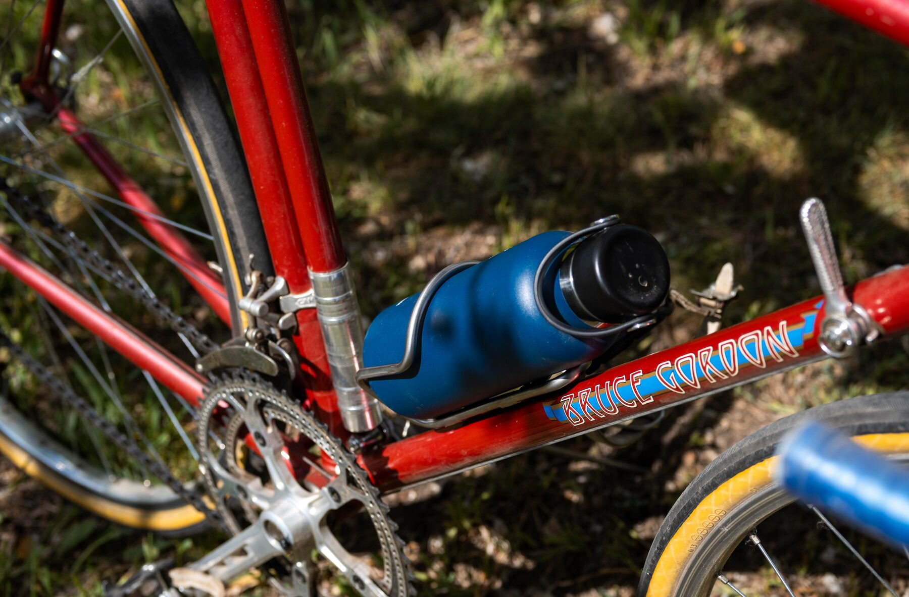
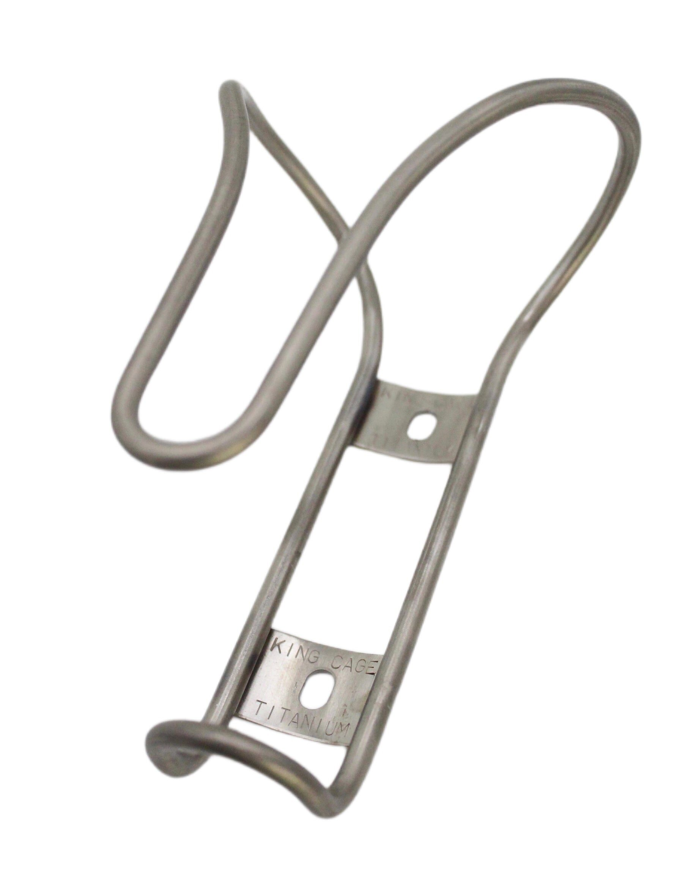
The Iris in solid titanium rod. Its curve can't be bent from tubing, so it uses solid rod. It weighs about the same as the stainless version, but it is incredibly strong.

A stainless Iris precision-made in the Durango shop. It won't leave black marks on your bottle and grips a little tighter.
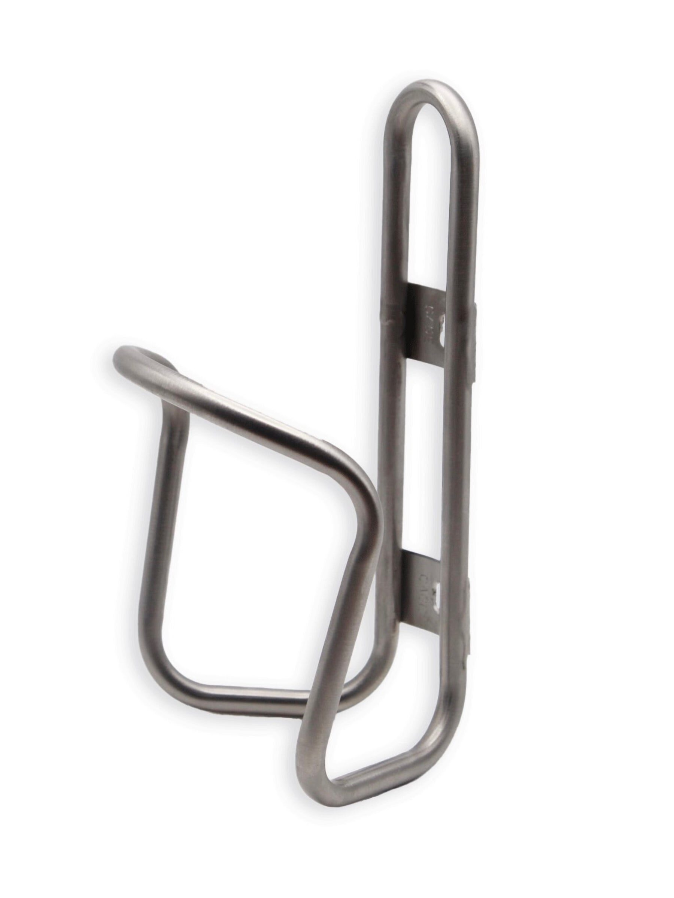
The standard titanium cage shape with a flat top. The lightest way to carry a metal bottle.

The stainless Bottle Lowering cage with a flat top. It takes metal bottles and sits the bottle about 1.1 inches lower.

Before You Ride
For non-cycling bottles, the base must be less than 3 inches (about 76mm). For bigger Nalgenes or large insulated bottles, the Manything Cage is the right fit.
Because Iris and Flat Top hold the bottle firmly, painted metal bottles may get scratched where they touch the cage. Unpainted stainless bottles and cycling bottles are no concern.
04
Tight Spaces
Side Loader · Bottle LoweringSide Loader · Bottle Lowering · Bottle Raising
Full-suspension MTBs, small frames, minivelos, touring bikes with frame bags. When there is little room inside the frame, pulling a bottle straight up gets hard. King Cage solves this by changing the direction and height of the same cage.
The Side Loader lets you put the bottle in and take it out from the side. It mounts left, right or center as you prefer, and even with side entry the bottle stays centered on the frame and sticks out no more than a standard cage. Bottle Lowering sits the bottle about 1.1 inches (about 28mm) lower, and Bottle Raising sits it higher for easier access.

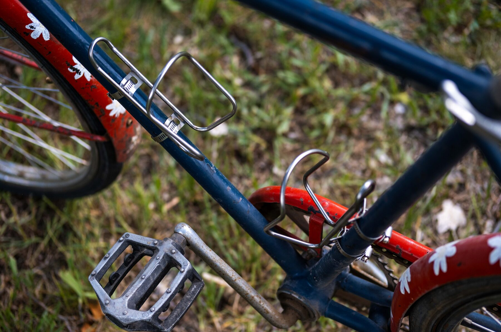

It holds the bottle by the neck groove from above and releases it to the side. Mounted with the side mounts, the center mount is free to strap a tool or spare tire.

Attached with hose clamps, it fits even bikes without cage bolts. Left, right or center.

The mount position moves to sit the bottle about 1.1 inches lower. Good for small frames or with a frame bag.

Sits the bottle higher for easier access. The center of the lowest hole lines up precisely with the bottom of the bottle.

Lowering · Standard · Raising
The three cages hold the bottle in the same shape; only the mount position against the frame changes. The cage bolts stay where they are and only the bottle height moves.
If the bottle catches between the top tube and the cage, choose Lowering. If it sits too deep to reach easily, choose Raising. Not sure which? Send a photo of your bike to Rubi Workshop.
05
Bikepacking
Manything · Longer ThingManything Cage · Longer Thing Cage
The Manything Cage is a titanium cargo cage for bikepacking. Big bottles like a Nalgene or a 40oz Klean Kanteen, tents and sleeping bags, pads and fuel all go on the fork or down tube. King Cage says it is even perfect for bringing a bottle of wine to dinner at a friend's house.
It comes in two kinds of titanium, solid rod for maximum strength or hollow tube for less weight, with optional orange King Cage branded Voile straps. The Longer Thing Cage, made for longer loads, has one more mount to carry more weight.
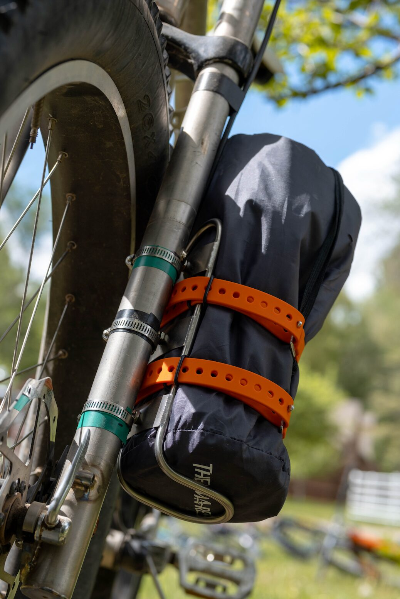


The basic form for big bottles and bikepacking gear. We recommend a bolt in all three mount holes.
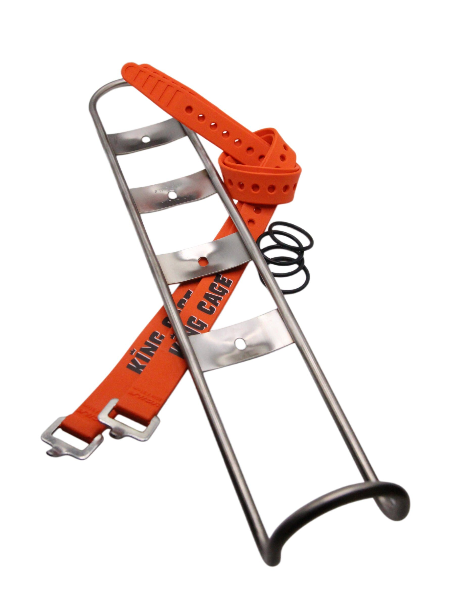
An elongated Manything. Carries long loads: tents, two bottles, stacked camp cookware, even fishing rods.

Straps attach to the cage with the four 1-inch O-rings supplied. The O-rings are EPDM with a 25mm inner diameter, easy to replace.

A stainless cage for the Stanley Classic 8oz flask. For a sip at the end of the ride. Flask not included.

How Much It Holds
King Cage has tested the Manything Cage with up to 2 liters of water weight. How much it carries depends on how you ride, and it is especially good for light bikepacking gear like a pad or a lightweight tent. The Longer Thing, with one more mount, carries heavier loads.
The tested strength depends on a bolt in every mount hole. If your fork is short of holes, back it up with a Universal Support Bolt.
06
Mounts · Small Goods
TCCM · USBTop Cap Cage Mount · Universal Support Bolt
The Top Cap Cage Mount replaces your stem's top cap to put a cage in front of the bars. It is ideal when you want to drink without bending down, need an extra bottle, or have a frame too small for a cage. It fits most cages on any top cap style stem.
The Universal Support Bolt is a clamp that mounts a cage on a tube with no bolt holes. From handlebars and seat stays to suspension forks and fat aluminum tubes, choose one of six sizes to match the diameter where it goes.
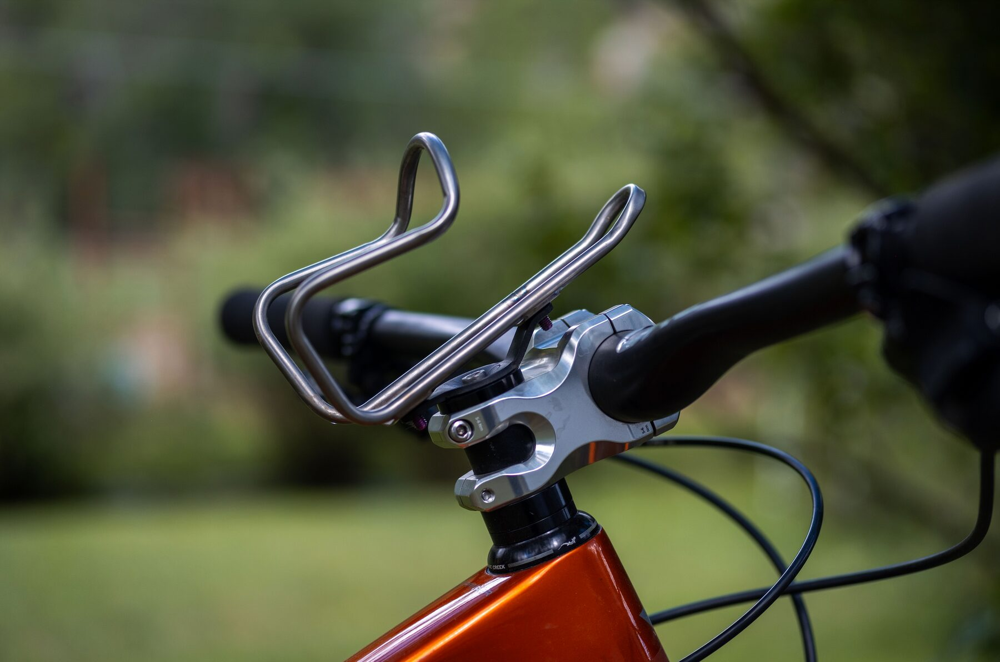
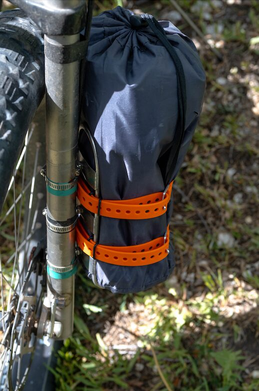
A cage mount that replaces your top cap. Easy to install, and the bottle sits in front of the bars where it is easy to grab while riding.
A stainless band clamp with a cage bolt. Sold individually; a cage usually needs two.
Universal Support Bolt sizes are maximum diameters. Measure the circumference where it will go with a string and divide by 3.14 to get the diameter. 1 1/8 inch fits handlebars and seat stays (minimum diameter 3/4 inch), 1 3/8 inch steel frames and forks, 1 5/8 inch 32mm suspension forks, 2 inch aluminum tubes and 36mm suspension forks, and 2 1/4 and 2 1/2 inch larger tubes. Protect the frame with electrical tape or a cloth rim strip (avoid rubber inner tube, which can break the clamp), and do not use on tapered forks. If the clamp loosens even slightly, it can slide down into the wheel. Not recommended for mounting racks.
Titanium Goods

A key ring bent from solid titanium rod. Comfortable in the hand, and easy to slide keys on and off.

Tire levers made from titanium. Very strong, but rough use can scratch your rims, so handle with care.

Straws made from the same 1/4-inch titanium tubing as the cages. 6-inch straight, 8-inch bent, 10-inch straight, cleaning brush included.
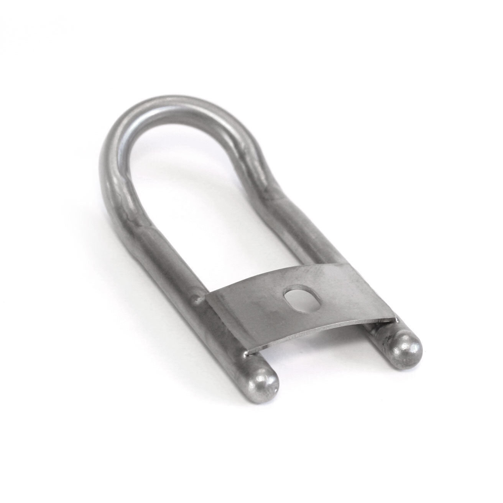
A titanium bottle opener shaped like the top of a bottle cage. A small pleasure after the ride.
07
Cage Guide
Choose by the bottle you carry and how much room there is inside your frame.
| Model | Material · Weight | Bottles | Best for |
|---|---|---|---|
| Titanium · Stainless Cage | Titanium about 31g Stainless about 48g | Standard cycling bottle | Road, gravel, touring, most bikes |
| Bottle Lowering | Titanium about 29g Stainless about 48g | Standard cycling bottle | Small frames, with a frame bag (about 1.1 in lower) |
| Bottle Raising | Titanium about 42g Stainless about 56g | Standard cycling bottle | When you want easier access (higher) |
| Iris | Titanium solid rod about 57g Stainless about 48g | Standard bottles, metal bottles with a 2.9 in base | Down tube mounting, insulated metal bottles |
| Flat Top | Titanium about 31g Stainless Lowering about 45g | Standard bottles, metal bottles with a 2.9 in base | Light metal bottle carry; stainless also suits small frames |
| Side Loader | Titanium about 37g Stainless about 45g | Standard cycling bottle | Full-suspension MTB, small frames, minivelos |
| Manything · Longer Thing | Titanium solid rod · tube | Nalgene, 40oz Klean Kanteen, tents, sleeping bags | Bikepacking, fork and down tube mounting |
| Oliver | Stainless about 48g | Stanley Classic 8oz flask | Touring, weekend rides |
Non-cycling bottles must have a base under 3 inches (about 76mm) to fit Iris and Flat Top. Weights are approximate figures from the official King Cage store and may vary slightly between pieces. Not sure which cage suits your bike and bottle? Send photos of both to Rubi Workshop.
08
Story
1990 ~ TodaySomerville · Durango
One titanium cage made at a customer's request became a family workshop that has lasted over 30 years. King Cage never moved to a big factory; it still makes each cage the way it did at the start.


Ron Andrews, an MTB racer with Team Fat Chance, streamlines frame production at Fat City Cycles and Ibis.
Sharing a shop in Somerville with Mike Augspurger of One-Off Titanium, he makes tools and machines for frame shops.
At a customer's request he makes the first titanium bottle cage and names it the King Cage. Dealer orders follow.
He moves to Durango, Colorado to work for Yeti Cycles, making cages in his garage at night.
The stainless steel cage arrives. Its shape has barely changed since.
At the North American Handmade Bicycle Show, he sets up machines in the booth and bends cages live for the crowds.
The range grows with the Side Loader, Iris and Manything, while family and crew keep the Durango basement shop running.
The King Cage Team


09 · Showroom
Hand-bent curves and welds are best seen in person. At Rubi Workshop you can see King Cage up close, and we will help you choose the right cage and mounting for your frame and the bottles you use.
For Dealers
For stocking King Cage and trade terms, please contact Rubi Supply, the B2B channel of Rubi Company.